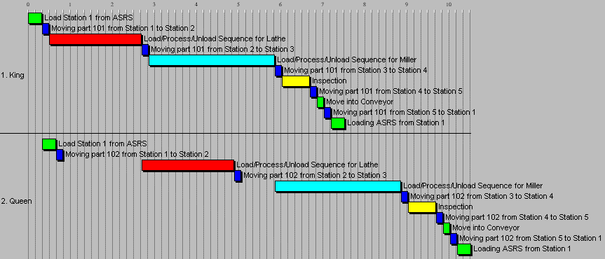
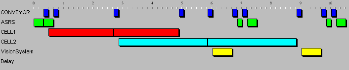

The Scheduler
To manufacture a set of components a production schedule has to be developed based upon the routes for the individual components. The Bill of Processes is used for each component and its processes are scheduled in time, ready for production. The scheduling software takes into account the finite capacity of the machine tools and ensures that a feasible schedule is produced. This schedule is displayed as a colour-coded Gantt chart of processes. Each process has an estimated start-time and end-time, based upon its position in the sequence and its duration.
To aid in the analysis of the schedule, the Gantt chart may be viewed in a number of different forms. A chart of machine-utilisation helps to locate production bottle-necks, or the overall cell-utilisation may be viewed. Individual components can also be examined in detail, allowing the user to alter any detail of the schedule. The schedule is then saved to the database ready for real-time execution.
Usage
To create a schedule, select the
New item from the File menu. The Scheduler needs to know which shop floor is to be used for this production schedule so a file selection dialogue is presented. Once the Shop-Floor has been established, the Order Entry dialogue is displayed. This has three columns: component name, quantity and numeric priority.In order for a process to be scheduled, a valid Bill of Processes must be created with the Route Planner. The names of the desired components should be typed, one per line, in the left column with a quantity for each in the central column (the default value for the quantity field is one). If necessary, a priority can be entered in the right column; otherwise the priority takes a default value. When the
OK button is pressed, a schedule for the components is created. A status dialogue is shown, which indicates the time taken and the number of calculations performed. Pressing the OK button on that dialogue shows the schedule.
A Schedule for a King and a Queen Component
The schedule is generated from the Bill of Processes for each component in the Order Entry. It is displayed as a staggered Gantt chart of processes, grouped as components, with time along the horizontal axis.
This schedule may be saved to the database or it may be altered and analysed. To save the schedule, the
File menu’s Save As... function should be used to give the schedule a name and to store it in the database.There are a number of ways to view the schedule, accessible through the
View menu. The Schedule item is the default, displaying the Gantt Chart shown above. The Cells item re-arranges the schedule to display a Gantt Chart of processes for each cell in the system and the Machines item breaks the schedule down further to show when individual machines are busy.
The Cell View
The
Component item first requests a component number and shows a graph of the individual processes for a component. This screen is similar to the Bill of Processes section of the Route Planner; a Histogram of processes is given, colour coded according to the Cell key. Each process can be altered in two ways: changing its duration by moving the mouse to the right edge and dragging the edge backwards or forwards when the cursor changes to a double-headed arrow, or clicking on the process bar itself producing the Process Characteristics dialogue box. This dialogue can be used in the same way as in the Bill of Processes (except that it has no Add and Remove buttons to modify the Resource Requirements list).The Component View can also be accessed by clicking the mouse on the component name at the left of the Schedule View.
Scheduler Controls
The File Menu
New
– This menu item creates a new schedule. A standard file selection dialogue appears, prompting for a shop floor layout name. The next dialogue is the order entry screen, with three columns: Part, Quantity and Priority. The first column is for a list of part names, one per line (pressing return in the left column starts the next line and hence the next part). The second column is for quantities of the components on the same line as the component. The third column is for a numeric priority between 0 and 9999, 0 being the highest priority. Both the quantity and priority column may be left blank; they take default values of 1 and 9999 respectively. When OK is pressed the order is checked for validity before the schedule is produced; (each component should be capable of being manufactured by the named shop floor). The status box is displayed while the schedule is being calculated and can be removed when the schedule is complete by pressing the OK button.Open...
– Retrieves a schedule from the database using the standard file selection dialogue and displays it with the default Schedule View.Save As...
– Saves a schedule to the database after allowing the user to name it using a standard file selection dialogue.Print Preview...
– Displays a preview of the printed schedule.Print...
– Sends the current schedule view to be printed.Print Setup...
– Allows the printer to be configured before printing.Exit
– Quits the scheduler.
The Edit Menu
Copy
– Makes a copy of the current schedule on to the Clipboard, a storage area which may be shared by several applications, hence data can be transferred between applications.Paste
– Retrieves data from the Clipboard. If there is a valid schedule on the clipboard, it is transferred to the scheduler and displayed. The schedule is then known as an Imported schedule and is displayed with a white border instead of the normal black. If a process in the Imported schedule has been started by the dispatcher before being transferred to the scheduler, it appears as a hatched colour and cannot be modified in any way.The Schedule Menu
Append
– Allows another order to be made and super-imposed on the current schedule which is re-calculated. The current shop floor layout is used so only the Order Entry dialogue is displayed.
The View Menu
Schedule
– The default view, showing a colour-coded Gantt chart of processes arranged in groups of components.Cells
– The usage of the individual cells in the system. The cell names are listed on the left and the Gantt chart shows when each cell is busy.Machines
– Similar in layout to the Cell view above, individual machines are listed on the left side.Component
– The processes used in a single component. The duration of a process bar may be altered by dragging its right hand edge with the mouse and any other detail may be altered by clicking the left mouse button on the bar itself.Order
– The component order, as entered by the user may be viewed with this menu item.